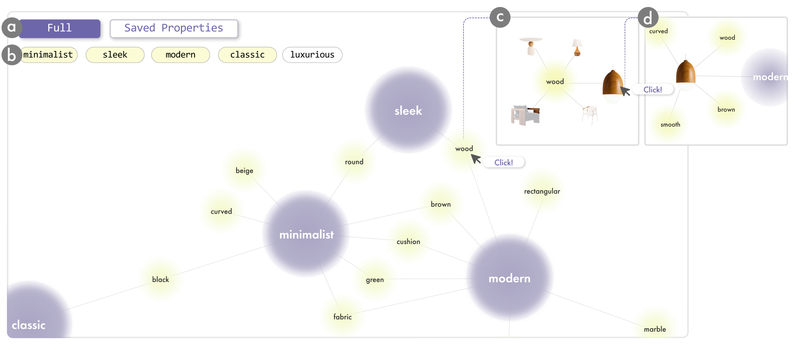
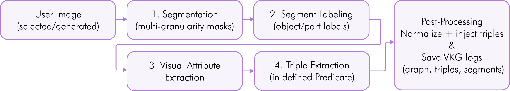

Structured Visual Knowledge Graph Extraction for Design Generation
Abstract
GenAlign addresses the challenge of semantic ambiguity in design generation by extracting structured Visual Knowledge Graphs from product images. The system enables precise property-based editing and generation through fine-grained semantic understanding of design elements, supporting applications in e-commerce, design automation, and creative workflows.
Overview
From part-level segmentation to property-based generation, each stage sharpens the system’s semantic grasp of a design.
Multi-granularity part-level segmentation using Semantic-SAM with Swin-L Transformer, extracting precise object boundaries and hierarchical part structures.
GPT-4o Vision-powered extraction of visual attributes — material, color, style, and relationships — transforming visual features into structured semantic properties.
Structured triple extraction following VisualSem ontology with 13 standard relations plus a custom “is-style-of” relation, building a cognitive graph of design elements.
Generate and edit designs by transferring or modifying properties in the knowledge graph — enabling precise control over material, style, and form.
System architecture

The interface
Inspect the extracted graph and its typed relations directly over the source image.

Edit any node’s attributes and propagate the change through the design.

The pipeline
Each stage refines the semantic representation — segmentation, labeling, attribute extraction, triple construction, and post-processing.

Multi-granularity part extraction using Semantic-SAM, producing hierarchical masks with object/part labels (e.g., sofa-armrest, table-leg).
GPT-4o Vision analyzes each segment to assign semantic labels, understanding both the part identity and its role within the overall object.
Extract fine-grained properties including material (wood, metal, fabric), color, texture, shape characteristics, and functional attributes.
Build structured knowledge graph triples following VisualSem ontology: is-a, part-of, made-of, has-property, is-style-of, and more.
Normalize properties, inject into the cognitive graph, and save VKG logs for analysis and generation tasks.
Results
The full extraction process, from segmented parts to a densified graph of typed relations.

Property-grounded generation and editing driven by the extracted knowledge graph.

Generated and edited designs produced by transferring and modifying graph properties.

Video